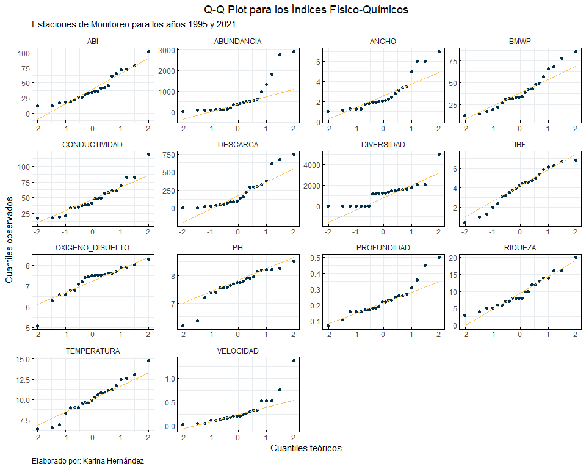
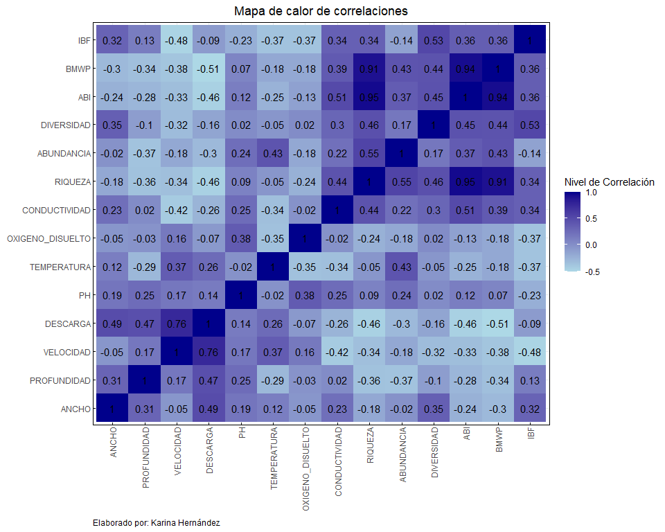
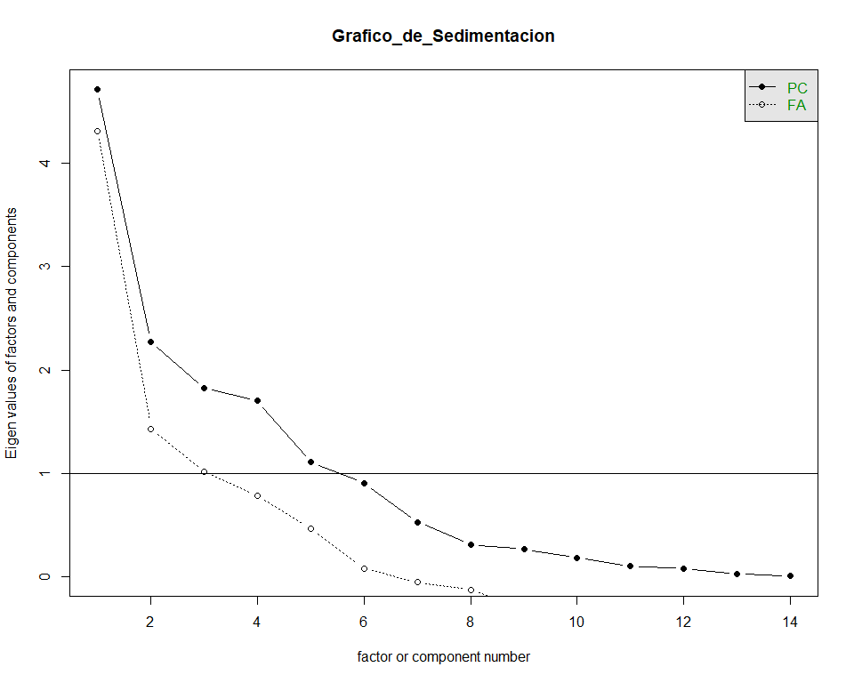
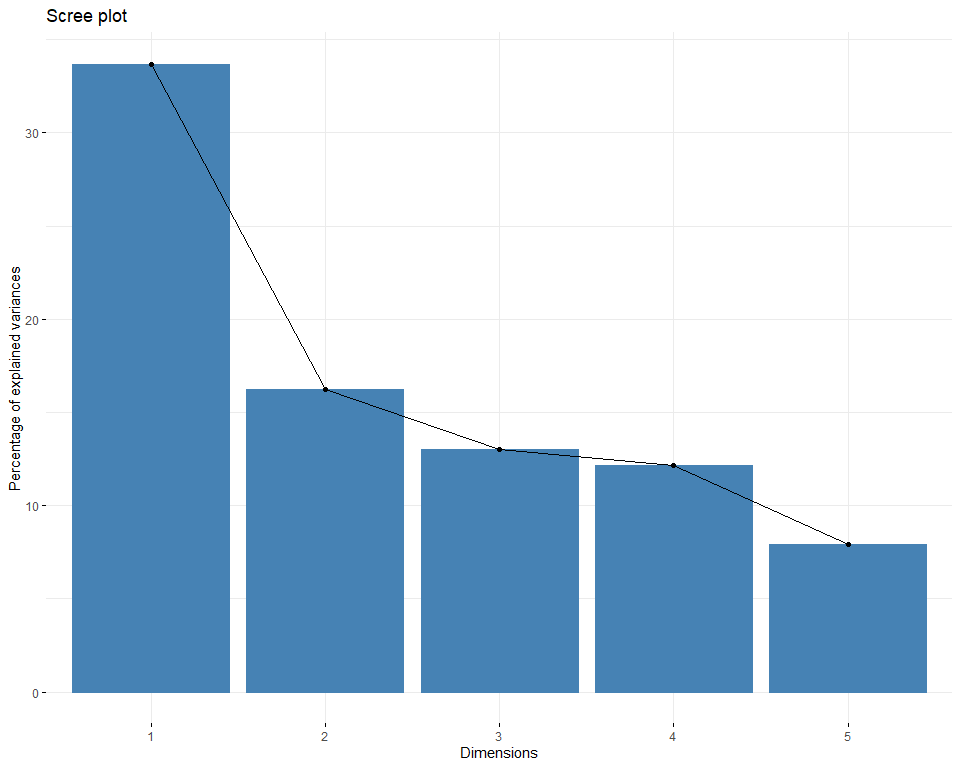
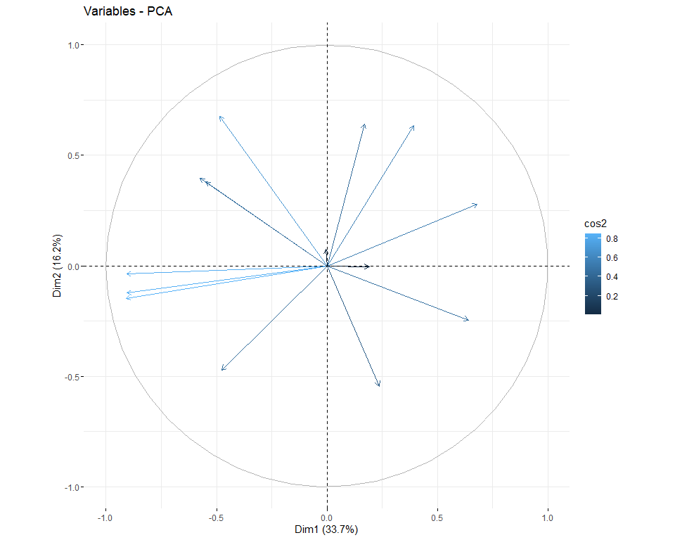
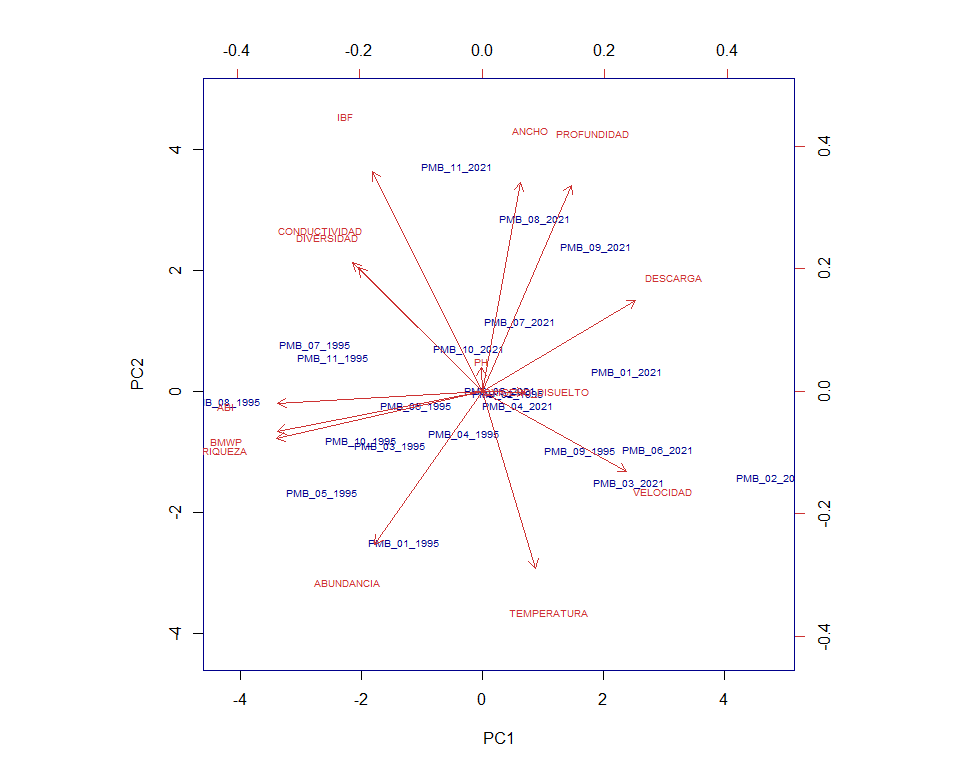
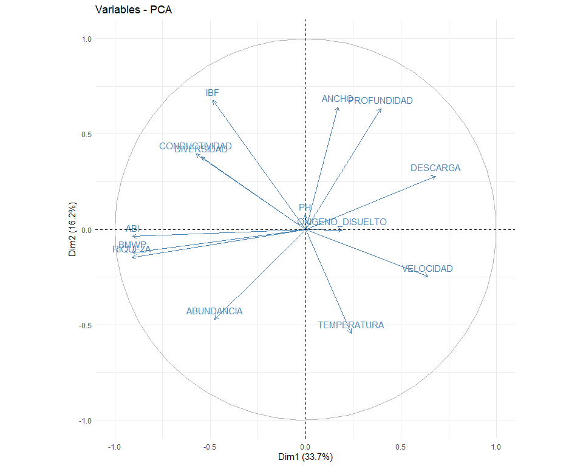

Análisis Multivariante para Comunidades de Macroinvertebrados
Maestría en Biodiversidad y Cambio Climático
Resumen
En el presente Anexo se lleva a cabo un exhaustivo proceso estadístico destinado a la caracterización detallada de especies, mediante la consideración de diversas variables tanto ecológicas como físico-químicas. Este análisis se ejecutará mediante dos enfoques ampliamente reconocidos en el ámbito de la estadística y la minería de datos: el Clúster Jerárquico y el Clúster Particional.
El Clúster Jerárquico es una técnica que busca agrupar objetos en función de su similitud, de modo que los objetos dentro de un mismo grupo sean más similares entre sí que con aquellos fuera del grupo. Este método se caracteriza por su capacidad para generar una jerarquía de agrupaciones, lo que permite una comprensión más profunda de la estructura de los datos y de las relaciones entre las diferentes especies.
Por otro lado, el Clúster Particional se centra en dividir el conjunto de datos en un número predeterminado de grupos o clústeres, donde cada especie se asigna a un único clúster. Este enfoque es especialmente útil cuando se desea una partición clara y definida de los datos, lo que facilita su interpretación y análisis. Al combinar ambos métodos, se pretende obtener una visión integral y detallada de cómo las variables ecológicas y físico-químicas influyen en la distribución y agrupación de las especies estudiadas.
Este enfoque permitirá identificar patrones subyacentes, similitudes y diferencias entre las especies, lo que a su vez contribuirá al mejor entendimiento de los ecosistemas y a la formulación de estrategias de conservación y manejo más efectivas.
1 Análisis Exploratorio de los Índices Físquico-Químicos y Ecológicos
Empezaremos con mostrar un Boxplot comparativo para visualizar si existen valores atípicos y como se distribuyen las variables en los años 1995 y 2021 según el formato o estructura de cada tabla con escalas de medición orignales en cada variable:
1.1 Dataset de los Índices Físico Químicos:
1.2 Boxplot de los indicadores físico-químicos y ecológicos:
La variable Abundancia presenta una alta dispersión para el año 1995 en relación a todas las variables de estudio
La variable Diversidad presenta una alta dispersión para el año 2021 en relación a todas las variables de estudio
1.3 Exploratorio de los datos:
De las medidas del Análisis Exploratorio tanto para tendencia central, como de dispersión se puede deducir lo siguiente:
- Las variables que presentan mayor variabilidad son
AbundanciayDescargacon Coeficientes de Variación por encima del 100%, esto lo puede corroborar la desviación estándar en comparación con el promedio de cada variable respectivamente.
- La variable
Diversidadtiene un Rango (Valor Máximo - Valor Mínimo) considerable, esto nos puede alertar más adelante sobre el comportamiento de dicha variable.
- El Coeficiente de Asimetría en la variable
Temperaturaes cercano a 0 lo que podría sugerir que la variable se acerca a una Distribución Normal Estándar
- Respecto a la Curtosis (Mayor a 3) en las variables
VelocidadyDiversidadson distribuciones con colas más largas, lo que puede sugerir la presencia de datos atípicos.
- En las variables
DescargayAnchoen Curtosis presentan valores cercanos a 0, lo que puede sugerir variables con una Distribución cercana a la Normal.
- Es importante mencionar que el Análisis Exploratorio no es determinante para analizar la presencia de normalidad en los datos. Por consiguiente, es importante a través de un Test Estadístico realizar la comprobación correspondiente.
- Finalmente, en un contexto de análisis de datos previo a la aplicación de cualquier técnica estadística, una vez revisado los estimadores en conjunto con los Boxplot podemos confirmar que es necesario realizar un escalamiento a la matriz de datos, para evitar los sesgos que pueden causar los valores atípicos y su unidad de medida, en el conjunto completo de los indicadores físico-químicos y ecológicos.
2 Análisis de la normalidad de los datos:
Con base a los resultados obtenidos del Análisis Exploratorio, a continuación analizaremos el tipo de distribución de cada variable, es evidente que si consideramos a un año de estudio (1995 o 2021) con 11 estaciones de monitoreo, no podemos hablar de datos cercanos a una Distribución Normal o Gaussiana por el principio de la Ley de los Grandes Números. Por lo cual se ha considerado los datos de los dos años.
En cada variable se aplica el Test de Normalidad y su signicancia estadística para determinar si obedece o no a muestra proveniente de una Distribución Normal Estándar N\approx (\bar{x}=0,\sigma^{2}=constante).
El Test de Shapiro-Wilks (W) (Gutiérrez, 2008), es uno de las pruebas estadísticas más robustas, y se obtiene de la siguiente forma:
W = \frac{{\left(\sum_{i=1}^{n} a_i x_{(i)}\right)^2}}{{\sum_{i=1}^{n} (x_{(i)} - \bar{x})^2}}
Donde:
- n es el tamaño de la muestra.
- x_{i} es el i-ésimo valor más pequeño de la muestra ordenada.
- \bar{x} es la media de la muestra.
- a_{i} son los coeficientes que se utilizan para calcular el estadístico de Shapiro-Wilks, y se calculan de la siguiente forma: \\ a_i = \frac{{m_i}}{{\sum_{i=1}^{n} m_i^2}} \\ m_i = \sum_{j=1}^{n} (x_{(j)} - \bar{x}) s_{(j)} \\ s_{(j)} = \sum_{k=1}^{j} (x_{(k)} - \bar{x})^2 \\
Los coeficientes a_{i} y los estadísticos auxiliares m_{i} y x_{j} se calculan a partir de las observaciones de la muestra y se utilizan en la fórmula del estadístico de Shapiro-Wilk. Estos coeficientes y estadísticos se definen matemáticamente de la siguiente manera:
Donde:
- m_{i} es la media de los elementos de las siguientes dos sumas:
- La suma en el numerador se calcula sobre todos los n valores de la muestra.
- La suma en el denominador se calcula sobre todos los n valores de la muestra.
- s_{j} representa la suma de cuadrados de las diferencias entre cada observación y la media, considerando solo las primeras j observaciones en orden ascendente. Esta cantidad se utiliza para calcular m_{i}, que a su vez se utiliza para calcular a_{i}, y finalmente en el cálculo del estadístico W.
Nota técnica: El valor del estadístico de Shapiro-Wilks (W) se compara con los valores críticos de la distribución para determinar si la muestra sigue una distribución normal. Si el valor de W es significativamente menor que el valor crítico correspondiente, entonces hay evidencia para rechazar la hipótesis nula de normalidad.

2.1 Test No paramétrico de Shapiro-Wilk para evaluar la normalidad en los Índices Físico-Químicos y Ecológicos:
| Variable | W | p_value | Nivel de Significancia al 0.05 | Rechazas H0 al 0.05 | Nivel de Significancia al 0.01 | Rechazas H0 al 0.01 | Nivel de Significancia al 0.1 | Rechazas H0 al 0.1 |
|---|---|---|---|---|---|---|---|---|
| ANCHO | 0.83 | 0.00 | Menor al \alpha | Sí | Menor al \alpha | Sí | Menor al \alpha | Sí |
| PROFUNDIDAD | 0.90 | 0.03 | Menor al \alpha | Sí | Mayor o igual \alpha | No | Menor al \alpha | Sí |
| VELOCIDAD | 0.75 | 0.00 | Menor al \alpha | Sí | Menor al \alpha | Sí | Menor al \alpha | Sí |
| DESCARGA | 0.83 | 0.00 | Menor al \alpha | Sí | Menor al \alpha | Sí | Menor al \alpha | Sí |
| PH | 0.88 | 0.01 | Menor al \alpha | Sí | Mayor o igual \alpha | No | Menor al \alpha | Sí |
| TEMPERATURA | 0.98 | 0.84 | Mayor o igual \alpha | No | Mayor o igual \alpha | No | Mayor o igual \alpha | No |
| OXIGENO_DISUELTO | 0.88 | 0.01 | Menor al \alpha | Sí | Mayor o igual \alpha | No | Menor al \alpha | Sí |
| CONDUCTIVIDAD | 0.92 | 0.07 | Mayor o igual \alpha | No | Mayor o igual \alpha | No | Menor al \alpha | Sí |
| RIQUEZA | 0.95 | 0.33 | Mayor o igual \alpha | No | Mayor o igual \alpha | No | Mayor o igual \alpha | No |
| ABUNDANCIA | 0.71 | 0.00 | Menor al \alpha | Sí | Menor al \alpha | Sí | Menor al \alpha | Sí |
| DIVERSIDAD | 0.79 | 0.00 | Menor al \alpha | Sí | Menor al \alpha | Sí | Menor al \alpha | Sí |
| ABI | 0.91 | 0.04 | Menor al \alpha | Sí | Mayor o igual \alpha | No | Menor al \alpha | Sí |
| BMWP | 0.94 | 0.16 | Mayor o igual \alpha | No | Mayor o igual \alpha | No | Mayor o igual \alpha | No |
| IBF | 0.96 | 0.60 | Mayor o igual \alpha | No | Mayor o igual \alpha | No | Mayor o igual \alpha | No |
Análisis: De igual forma en un contexto general de los indicadores físico-químicos, ecológicos, con un nivel de significancia del 5%. De las 14 variables, 5 presentan normalidad y el resto de variables no lo son. Este resultado nos puede permitir aplicar un método No Paramétrico para descubrir clústers o grupos homogéneos.
3 Análisis de Componentes Principales:
3.1 Matriz de Correlaciones:

3.2 Keiser-Meyer-Olkin (KMO) y su significancia estadística:
Kaiser-Meyer-Olkin factor adequacy
Call: KMO(r = indices_fq_ddc)
Overall MSA = 0.44
MSA for each item =
ANCHO PROFUNDIDAD VELOCIDAD DESCARGA
0.26 0.65 0.35 0.41
PH TEMPERATURA OXIGENO_DISUELTO CONDUCTIVIDAD
0.36 0.26 0.17 0.61
RIQUEZA ABUNDANCIA DIVERSIDAD ABI
0.60 0.42 0.61 0.48
BMWP IBF
0.58 0.55 $chisq
[1] 1413.954
$p.value
[1] 3.472263e-236
$df
[1] 91Un KMO de 0.44 es considerado bajo y podría sugerir que un análisis factorial puede no ser adecuado para estos datos. Sin embargo, la prueba de Bartlett tiene un p-valor menor al nivel de significancia del 5%, lo que indica que las variables están correlacionadas y que, por lo tanto, podría justificarse aplicar un método multivariante para reducción de dimensionalidad.
3.3 Gráfico de Sedimentación:

Al analizar las componentes principales, se obtiene como resultado que la variabilidad se explica mejor hasta 5 dimensiones.
3.4 Componentes Principales:
Importance of components:
PC1 PC2 PC3 PC4 PC5 PC6 PC7
Standard deviation 2.172 1.5080 1.3503 1.3036 1.05141 0.95050 0.72437
Proportion of Variance 0.337 0.1624 0.1302 0.1214 0.07896 0.06453 0.03748
Cumulative Proportion 0.337 0.4994 0.6297 0.7511 0.83002 0.89456 0.93204
PC8 PC9 PC10 PC11 PC12 PC13 PC14
Standard deviation 0.55491 0.51189 0.4216 0.3153 0.27573 0.14732 0.08124
Proportion of Variance 0.02199 0.01872 0.0127 0.0071 0.00543 0.00155 0.00047
Cumulative Proportion 0.95403 0.97275 0.9855 0.9926 0.99798 0.99953 1.000003.5 ScreePlot:

3.6 Variables vs Dimensiones:

3.7 Biplot:

Las variables ecológicas tienen una alta correlación con la variable riqueza y cercanía a diversidad. En el biplot del PCA se evidencia una relación inversamente proporcional entre las variables IBF y Temperatura, estas variables no poseen relación alguna significativa ya que sus direcciones en la gráfica forma un ángulo de casi 90 grados.
3.8 Círculo de correlaciones:
